Les documents ci-après sont proposés
en téléchargement gratuit. Ils seront intégrés au fur et à mesure de
l'avancement de l'année scolaire. Toutefois, tous ces documents sont
protégés par les droits d'auteurs (©
Jean-Robert Seigne). Vous êtes autorisé à en faire usage
librement pour des activités d'enseignement mais vous ne pouvez pas
les modifier ou les diffuser à titre payant. Mise en garde : les
documents peuvent contenir des fautes de frappe ou des erreurs
indépendantes de la volonté de l'auteur.
Vous pouvez accéder ici à la page des documents de
cours.
| 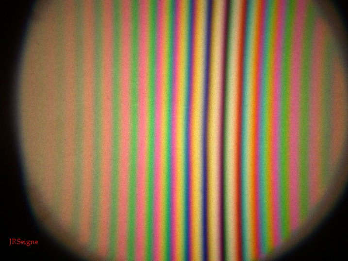 |
Les figures d'interférences sont
obtenues lorsque deux faisceaux lumineux issus d'une même source
se superposent après avoir suivi des parcours différents. Les
conditions d'obtention d'une figure comme celle présentée
ci-contre sont assez contraignantes. C'est en général le cas
sauf lorsque la source lumineuse utilisée est un laser. Dans ce
cas, il est beaucoup plus facile d'observer correctement des
figures d'interférences. |
Vous pouvez accéder ici à la page des
séries
d'exercices utilisés en TD.
| 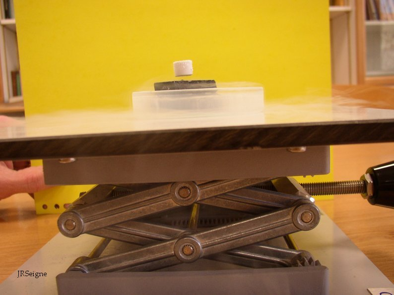 |
La lévitation de l'aimant se
produit parce qu'une force magnétique répulsive obtenue entre le
supraconducteur (bloc noir) et l'aimant permet de compenser le
poids. Lorsque le bloc noir est amené à la température
d'ébullition de lazote liquide, il devient supraconducteur. Des
courants électriques peuvent s'y développer sans qu'il y ait
dissipation d'énergie par effet Joule. La présence de l'aimant à
son voisinage entraîne la création de tels courants car le
supraconducteur cherche à annuler en son sein le champ
magnétique imposé par l'aimant. Ce sont ces courants qui sont
responsables de la force répulsive subie par l'aimant. |
Vous pouvez accéder ici à la page des
diaporamas
présentés en classe.
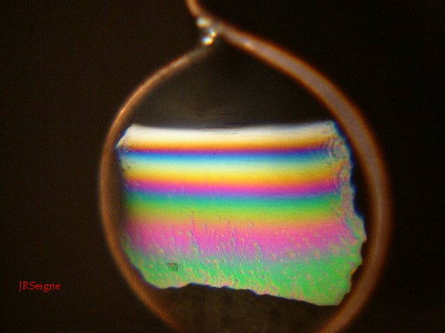
|
Après avoir plongé le cadre
circulaire dans une solution d'eau savonneuse, on obtient un
film transparent de très faible épaisseur comparable à ceux
obtenus lorsqu'on fait des bulles de savon. En éclairant avec
une source de lumière blanche, il se produit des interférences
donnant, ici, des franges colorées rectilignes. Ce phénomène est
dû d'une part aux diverses réflexions et transmissions de la
lumière au niveau de la lame de savon et d'autre part à la
superposition des différents faisceaux de lumière qui en
découle. |
Énoncés et Solutions des devoirs
|
Vous pouvez accéder ici à la
page des
devoirs.
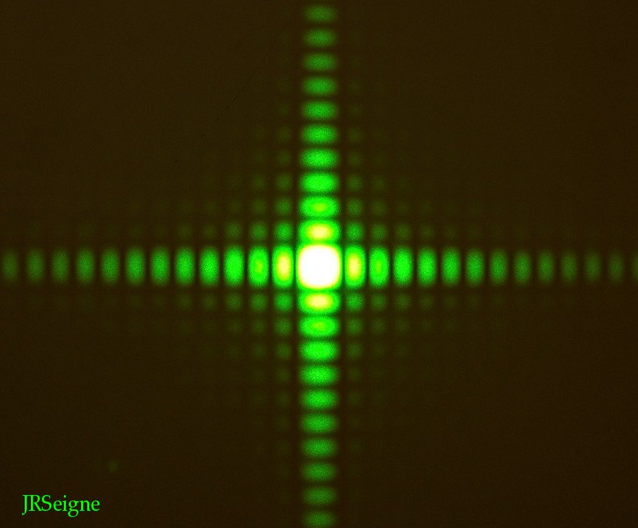
|
La lumière ne se
propage plus de façon rectiligne lorsqu'elle est contrainte de
traverser une ouverture relativement petite : c'est le phénomène
de diffraction. Le phénomène est d'autant plus marqué que la
taille de l'ouverture est de l'ordre de la longueur d'onde. La
figure de diffraction obtenue s'explique à l'aide d'une théorie
ondulatoire de la lumière. Les symétries observées sur la figure
sont en rapport avec les symétries de la pupille qui diffracte.
À gauche, il s'agit d'une pupille carrée alors qu'à droite la
pupille est circulaire ce qui est une situation beaucoup plus
courante en optique. |
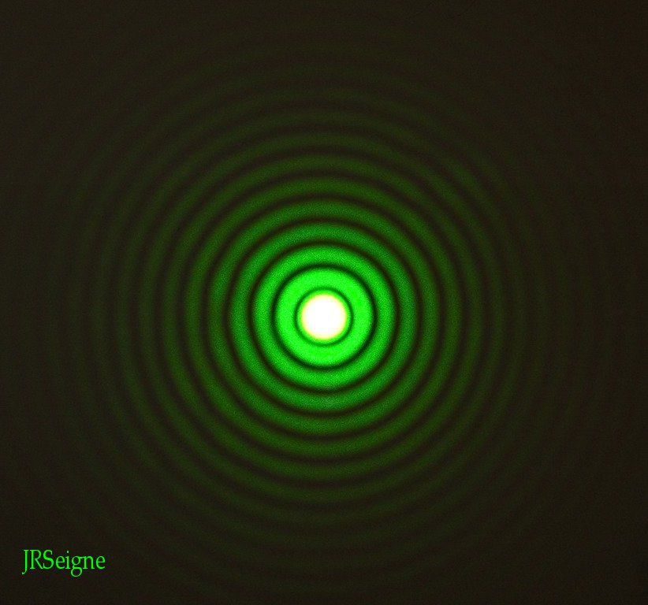 |
Vous pouvez accéder ici à la page des
TP.
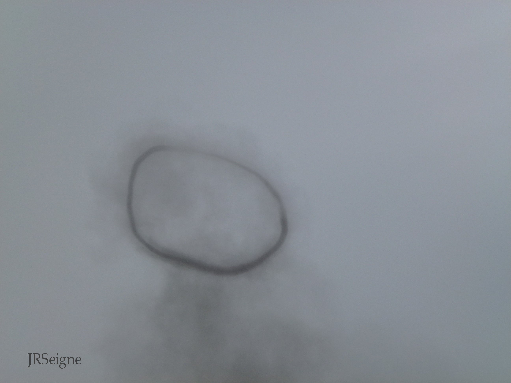
|
Les ronds de fumée correspondent
à une situation très particulière de la mécanique des fluides où
le gaz chaud (et les restes de poussières solides) formé dans le
cas présenté ici par une petite explosion de poudre possède un
écoulement tourbillonnaire. Le modèle correspond à celui appelé
vortex de Hill et plus précisément au modèle de l'anneau de
vorticité. La photographie montre un rond de fumée d'un diamètre
de 2 mètres environ montant dans l'atmosphère sur fond de ciel
nuageux. Sa stabilité sous forme d'anneau a été de l'ordre de la
minute. Photographie réalisée lors du spectacle Le
Secret de la Lance proposé par Le Puy du Fou (85). |
Etudes documentaires et situations problèmes
|
Vous pouvez accéder ici à la page des
études
documentaires et des situations problèmes étudiées en classe.
| 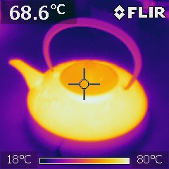 |
Photographie d'une théière en
infrarouge. Comme vous pouvez le constater par l'échelle de
température, cette théière contient selon toute vraisemblace de
l'eau chaude. Tous les corps émettent un rayonnement
électromagnétique. Celui-ci est fonction de leur température. La
température joue sur la puissance émise mais aussi sur le
spectre : la longueur d'onde du maximum d'émission est d'autant
plus courte que la température est élevée. Les différents
éléments (pixels) du capteur permettent de faire le lien entre
rayonnement et température qui est ensuite représentée en
fausses couleurs. L'anse de la théière est constituée d'un
matériau isolant (pas de conduction thermique), ce qui permet de
ne pas se brûler en versant le thé. |
Vous pouvez accéder ici à la page des documents en rapport avec l'
oral
des Concours.
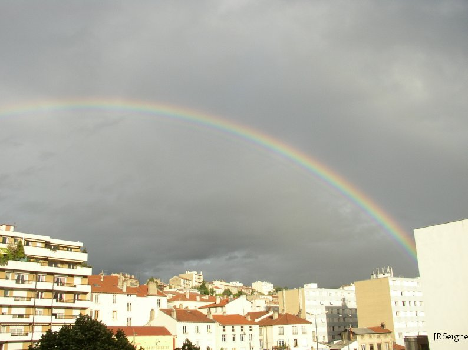
|
La formation de l'arc en ciel
est liée au fait que la réfraction des rayons lumineux du Soleil
qui pénètrent dans les gouttes d'eau dépend de leur longueur
d'onde. Les différentes couleurs du spectre visible sont donc
déviées de façon différente. Les rayons lumineux qui ressortent
de la goutte d'eau et se dirigent vers l'observateur ne semblent
alors pas provenir du même lieu d'où cet étalement des couleurs
dans le ciel. À gauche : photographie réalisée à Saint-Etienne
(42). Sur la photographie de droite (Nantes 44), on peut
apercevoir un second arc en ciel où les couleurs sont dans un
ordre inversé. Ceci est dû au fait que les rayons lumineux
effectuent deux réflexions à l'intérieur de la goutte d'eau
avant d'en ressortir alors que dans le cas de l'arc en ciel
observé plus couramment, ils n'en effectuent qu'une seule. |
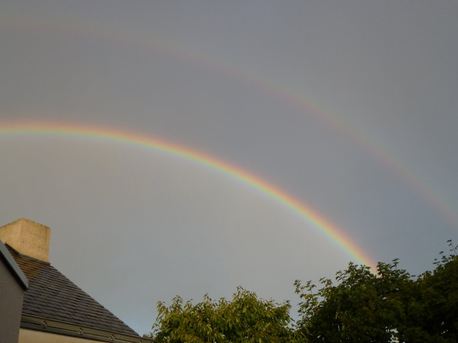 |
Situation des anciens étudiants de MP et MP*
|
Dans cette page, vous trouverez les
grandes
écoles
ou les formations supérieures intégrées par les anciens étudiants
de MP et de MP*. Des informations non anonymées, figurent dans les pages
réservées aux
étudiants de MP* et aux
anciens MP. L'accessibilité s'effectue avec un code.
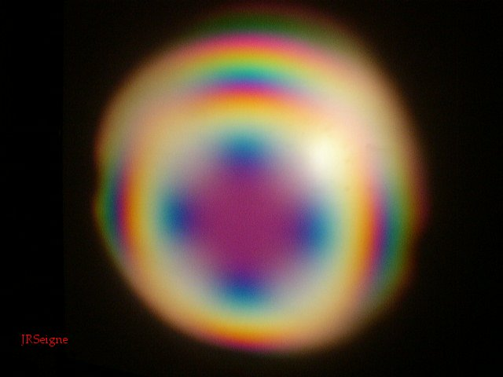
|
Les interférences en lumière
polarisée donnent lieu à l'observation de figure très
particulières. Aux particularités des figures d'interférences
s'ajoutent les conséquences du fait que le champ électrique de
chacune des deux ondes possède une orentiation spécifique dans
le plan perpendiculaire à la direction de propagation. Les
polarisations les plus classiques sont la polarisation
rectiligne (le champ électrique conserve une direction fixe),
elliptique et circulaire (l'extrémité du champ électrique décrit
au cours du temps une ellipse ou un cercle). |
Fonctionnement de la classe de MP*
|
Ces pages du site sont accessibles uniquement aux
étudiants
de MP* du lycée Clemenceau ainsi qu'aux anciens MP.
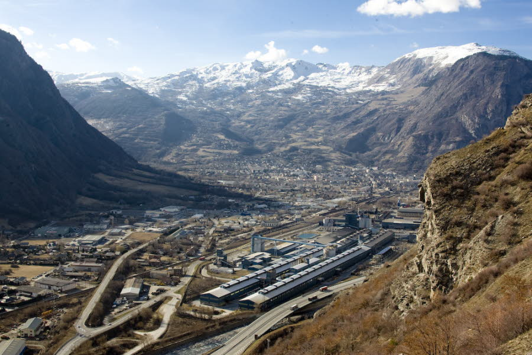
|
Sur la
photographie de gauche, on peut voir les longs bâtiments de
l'entreprise Alcan Rio Tinto qui produit de l'aluminium par
électrolyse à St Jean de Maurienne (73). Ils contiennent les
séries d'électrolyseurs parcourus par des intensités de l'ordre
de 300 000 ampères. Les électrolyseurs jouxtent l'autoroute A43
qui s'en approche à une vingtaine de mètres au plus près. Si
l'on retient le modèle du fil rectiligne infini pour
l'estimation du champ magnétique, on arrive à des milliteslas,
c'est-à-dire 100 fois le champ magnétique terrestre. Un tel
champ, facilement produit par un petit aimant, est donc anodin
mais, par précaution, la vitesse est limitée au cas où
l'électronique d'un véhicule serait affectée et un panneau
précédant cette zone prévient les porteurs de pacemakers d'un
éventuel danger. Il faut noter que sur la voie de l'autoroute la
plus éloignée des électrolyseurs, il n'y a aucun panneau... La
décroissance du champ magnétique avec la distance n'est pourtant
pas si importante... |
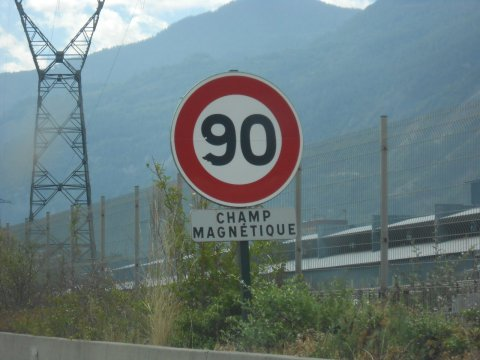 |
|
Gestionnaire du site :
Jean-Robert Seigne, professeur de Sciences Physiques en Classe
Préparatoire MP*, lycée Clemenceau Nantes.
Vous pouvez
. |